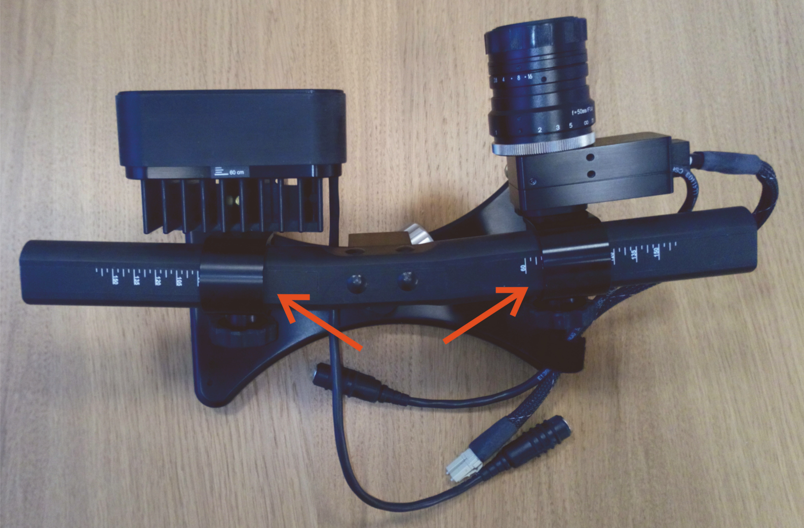
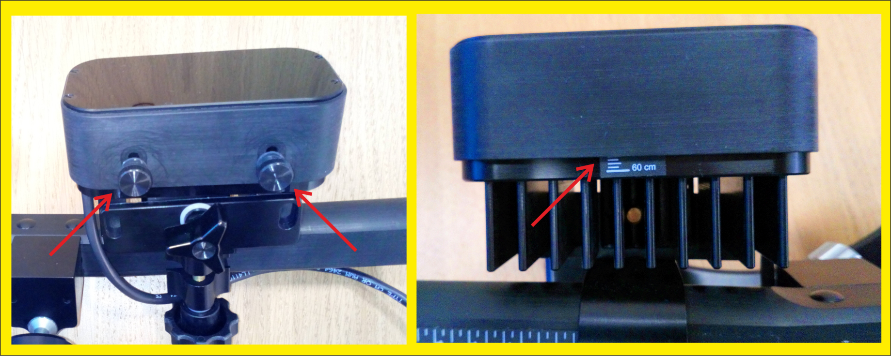

EyeLink Operations Guide
Quick Start Guide
Install/Training (slides)
User Manual v1.0.22
Initial Setup
Switch on the 6-way bar plug (next to EyeLink Host PC), to provide power to the Host PC, PC monitor & EyeLink camera.
EyeLink batteries
- Press the TEST button to check the power level (batteries #1 and #2), or power on and press the TEST button (batteries #3 and #4).
- Use a fully charged battery if possible.
A battery with 2-3 hours should be fine for a short experiment. Do not risk using it for a 2-hour experiment.
Take a battery into the MSR and place in front left hand corner (as seen from gantry chair).
Arrange the power cable around the inside wall of the MSR to avoid any loops.
Remove the lens cap from the FO camera head, and place the FO camera head/IR Illuminator on the small table in front of the gantry chair (usually once Participant is in place).
Attach power cable to battery and FO camera head/IR Illuminator. Switch on the battery.
NOTE: Ensure a good cable connection is made (the black rubber strain reliefs aren't pushed up over the silver two-pin connectors).
NOTE: If the camera head/IR Illuminator isn't powered-on first, the Host PC will complain slightly (ticking sound) when EyeLink starts up.
To prevent small threshold drifts, the EyeLink camera head/Host PC etc should be powered up/switched on for at least 5 minutes before recording.
If using Monocular, make sure the FO camera head is HORIZONTAL, and the knurled silver adjustment knobs are centered to the projector screen.
{kind=link}
- Once Participant is in place, tilt the camera head/illuminator as necessary to bring the eye into view, making sure to keep everything as level as possible.
For Binocular use, the position of the camera head will require changing.
-
Note the value on the BAR SCALE (as indicated by the RED line in the image) before undoing the knob, and make sure the camera mount is back at that value on the bar after adjusting the camera head and before tightening the knob.
-
Undo the BLACK KNURLED KNOB (as indicated by the BLUE circle in the image) to allow the camera head to be pulled slightly away from the bar, exposing the BRASS FIXING PINS (as indicated by the GREEN circle in the image).
-
Adjust the camera head on an angle, aligning the pins to the secondary/BINOCULAR position, and then push the camera head back into place, tightening the black knurled knob - FRONT VIEW of Binocular usage position.
-
Ensure the camera mount hasn't slid closer or further away from the IR illuminator when adjusting (as indicated by the RED line in the images mentioned above).
-
If required, raise the small table using the black plastic TABLE RISERS, 3 heights available, so that the top of the IR Illuminator is as close as possible to the lower edge of the projector screen.
{kind=link}
{kind=link}
{kind=link}
{kind=link}
{kind=link}
EyeLink Clip Position Adjustment

- Camera Head and Illuminator Separation:
Adjust the camera and Illuminator clip positions on the mounting bar so that the inner edges align with the eye-to-camera distance measured in cm. - When using the small table, the separation should be already adjusted. Only if moving closer or further away will an adjustment need to be made.
EyeLink Configuration
-
Switch on the EyeLink Host PC & monitor. Select the default EyeLink partition from the Windows Boot Manager interface.
-
Select the appropriate EyeLink Configuration from the Set Options screen, e.g. monocular, binocular.
- From Set Options, select LONG RANGE MOUNT in the Configuration window (may already be highlighted)
- Then select Select Config... and choose either MONOCULAR or BINOC/MONOC and click on Accept.
- The following screens should be displayed, depending on the chosen option - MONOCULAR IMAGE or BINOCULAR IMAGE.
- Make sure the sample rate is selected back to 1K for Binocular usage
(as indicated by the RED arrow in the BINOCULAR IMAGE).
The sample rate defaults to 500Hz when selecting Binocular. - The view of the head will need adjusting when using Binocular, as the angle of the camera head has changed.
Select the top right-hand blue square (as indicated by the BLUE arrow in the BINOCULAR IMAGE) as many times as necessary to display the correct view.
- Make sure the sample rate is selected back to 1K for Binocular usage
- The following screens should be displayed, depending on the chosen option - MONOCULAR IMAGE or BINOCULAR IMAGE.
{kind=link}
{kind=link}
{kind=link}
{kind=link}
{kind=link}
Info
Lens Guide
Three lenses are available for use as required: 35mm, 50mm and 75mm, with the 35mm lens being used as the default, currently, for both monocular and binocular usage.
The 35mm lens only has a focusing ring, whereas the 50mm and 75mm lenses have both focus and apature adjustment. The aperture ring is the smaller of the two, and probably doesn’t need adjusting (currently fixed at 1.8 f-stop on the 75mm lens).
Smaller numbers (e.g., f/2.8) mean a wider opening for more light/blurry background, while larger numbers (e.g., f/11) mean a smaller opening for less light/sharper background).
Lens Guide for Different Viewing Distances
| Lens Apature Size | Long Range Mount (Monocular/Binocular) |
|---|---|
| 35mm | 60-70cm |
| 50mm | 70-100cm |
| 75mm | 100-150cm |
If necessary, have the Participant remove any mascara, and replace glasses with provided MEG-safe glasses. Soft contact lenses can be worn during an eye-tracking experiment, but hard contact lenses may interfere with the corneal reflection (CR) and thus need to be switched for MEG-safe lenses using the provided GoPro/Loc-Line assembly.
Info
Mascara. Eye lashes with mascara will show very dark on the eye image, which can have a negative effect on pupil detection. Mascara shouldn’t be used in the MEG in any case, due to the possibility of metal particles in the makeup.
Soft contact lenses usually work quite well. The edge of lens can be seen from the eye image as pale ring, but it doesn’t usually have an effect on the eye tracking. Lenses can also create an extra reflection point, which is very similar to a corneal reflection (1st Purkinje image), but is normally only visible at certain angles.
Hard lenses don’t usually work with the EyeLink. They tend to be less stable than soft lenses and can slide partly off the centre of the eye. This will produce an eye image, where the pupil is partially cut off.
MEG-glasses. The EyeLink will work with our MEG-safe glasses, but it needs to be adjusted very carefully. The lenses may reflect IR light, which can disturb the eye tracking. Also the success rate for good tracking is lower with the glasses than without.
Focusing
Align the camera
-
Once the Participant is positioned in the gantry chair, point/tilt the camera at the eye to be tracked so that the eye appears in the centre of the global view. (TOP IMAGE WINDOW on the Camera Setup screen), undoing/tightening the silver knurled knobs, remembering to keep the camera/IR illuminiator as level as possible.
If necessary, move the whole Desktop Mount left/right slightly so that the patch of IR light is aligned with the field of view of the camera head. -
If tracking the left eye, the illuminator is usually on the right side, but the position may be irrelevant for binocular eye tracking.
- Focus the camera image if the eye looks blurred (by turning the lens focus ring).
The 35mm lens only has a focusing ring, whereas the 50mm and 75mm lenses have both focus and apature adjustment. The aperture ring is the smaller of the two, and probably doesn’t need adjusting (currently fixed at 1.8 f-stop on the 75mm lens).
Smaller numbers (e.g., f/2.8) mean a wider opening for more light/blurry background, while larger numbers (e.g., f/11) mean a smaller opening for less light/sharper background).
Note
When using Psychtoolbox (PTB), the image of the eye can be thrown onto the projector screen to make focusing easier. The left/right arrows on the Stim PC toggle between wide angle view and eye focused view.
- To throw the image, start TRACK (using either the installed standalone program (when testing) or as part of stimulus code - see the Calibration section for more detailed usage and link to the In-House provided code). The Offline Screen should appear.
- Press
ENTERto start camera setup, the Camera Setup screen should appear, and then pressENTERagain to display the camera image of the Eye
A good guide is to check if the eyelashes are in focus; when they are sharp the image is usually good enough.
{kind=link}
{kind=link}
{kind=link}
Info
Ideally when recording from one eye, the eye movements should be measured from the Participant’s dominant eye – but this is the optimal solution and not necessarily essential to obtaining good eye tracking.
If you want to use the dominant eye, examples to find the dominant eye are shown below:
- Extend your arms out in front of you and create a triangular opening between your thumbs and forefingers by placing your hands together at a 45-degree angle.
With both eyes open, centre this triangular opening on a distant object - such as a wall clock or door knob.
Close your left eye.
If the object stays centred, your right eye (the one that's open) is your dominant eye.
If the object is no longer framed by your hands, your left eye is your dominant eye. - Extend one arm out, holding the thumb (or index finger) of that hand in an upright position.
Keeping both eyes open and focused on a distant object, superimpose your thumb/index finger on that object. Don't worry if it looks like your thumb/finger partially disappears - that’s normal.
Alternately close one eye at a time.
The eye that keeps your thumb/finger directly in front of the object while the other eye is closed is your dominant eye.
-
Roughly focus on the eye using the wide angle view on the projector screen.
-
Set the search limits on the Eyelink Host PC by selecting the pupil image in the global view and then select Auto Threshold.
-
Switch to eye-view (arrow key) and focus using the corneal reflection. The focus is best when the corneal reflection is smallest (sharp).
-
Select/click Auto Threshold again, and check whether the pupil value (identified by the blue shading) is between 75-115 and the corneal reflection is less than 240 (identified by a turquoise circle with crosshair).
If needed, manually adjust. If sub-optimal, then the ILLUMINATOR FOCUS may need adjusting.
{kind=link}
A good check is to ask your Participant to look along the edges/four corners of the display and ensure that the pupil and corneal reflection do not get lost.
Focusing the Illuminator

- If the the Illuminator needs focusing, loosen the two knurled knobs on the underside of the Illuminator and then adjust the cover so that its edge aligns with the marking that approximates the eye-to-camera distance and then tighten the knobs.
Info
Pupil threshold: Fill the dark pupil with blue colour. If there isn’t enough colour inside the pupil, adjust the pupil threshold level up. If there is too much blue colour around the pupil, change the threshold level down. Pupil value should be between 75 and 115. If the pupil threshold is too high or too low, try increasing or decreasing the eye-camera distance.

Corneal reflections: You want a small CR as possible, showing the pupil is in focus. If there is a white halo around the turquoise reflections, adjust the CR threshold level down. Also adjust the focus of the camera. Corneal reflections should not exceed 240. If the corneal thresholds are too high, try increasing the eye-to-camera distance.
CR smearing is typically seen when the Participant looks top-left or top-right of the display, indicating the viewing angle is too large for the setup. Try raising the Desktop mount and/or increasing the viewing distance.

Correct detection: When both the pupil and CR are detected correctly, you will see the GREEN boxes, under the eye or eyes being tracked, showing PUPIL OK and CR OK in white text e.g. PUPIL OK
Info
Default settings for the display resolution of the EyeLink 1000 are set to 1920 x 1080 in the PHYSICAL.INI file that specifies the settings (screen_pixel_coords = 0.0, 0.0, 1920.0, 1080.0).
It’s important that it is matched with the actual display resolution you use, as the calibrated gaze data is in pixels.
If you use a different display resolution, you can change the settings, but don’t do this in the PHYSICAL.INI file.
Rather, copy the command line to the FINAL.INI file and change the setting there (this will override the settings in the PHYSICAL.INI file).
All setup files (.ini files) are stored in the C:\ELCL\EXE directory. Remember to reset it to the default setting after you finished your experiment!
The best way to set the display resolution is to have your script send a command to the Host PC to update this parameter based on the resolution you are using. For example ...
Eyelink('Command', 'screen_pixel_coords = 0 0 1920 1080');
- Check which eye is being tracked in the EyeLink Host Computer! (the last known settings are used, which may be different to your own settings).
Calibration
Info
When writing your own applications, try to match the background colour of the screen during calibration and validation to that of the test displays. Changes in pupil size caused by large brightness differences can degrade the system accuracy.
A velocity threshold of 22 o/S allows detection of saccades as small as 0.3o, ideal for smooth pursuit and psychophysical research.
A conservative threshold of 30o/S is better for reading and cognitive research, shortening saccades and lengthening fixation durations. The larger threshold also reduces the number of microsaccades detected, decreasing the number of short fixations (less than 100 msec in duration) in the data.
Use of eye-movement acceleration is important for detection of small saccades, especially in smooth pursuit.
Acceleration data has much more noise than velocity data, and thresholds of 4000o/S2 for small saccade detection and
8000o/S2 for reading and cognitive research are recommended.
Check your sample rate: Lowering the sample rate to less than 2K can help with the stability of the eye tracker. Our Default is 1000Hz for both monocular and binocular.
Info
Two useful links to Eyelink PTB code (on Github) can be found below ...
EyelinkDoTrackerSetup.m
Psychtoolbox/PsychHardware/EyelinkToolbox/Contents.m
Our In-House code EyeLink_Demo.m - With many thanks to Dr. Yali Pan
- Set the desired Calibration and Validation settings.
- From the SET OPTIONS screen, choose the Calibration Type and Pacing Interval.
The current Default is a 9-point grid and 1000msec (1sec) interval.
9-point calibration is standard, but Participants who find that difficult can be given an easier 5-point or 3-point calibration.
Click on the relevant "Calibration Type" as necessary. - It is recommended to perform the Calibration in a randomised order , so make sure the Randomize Order box is selected.
- Uncheck/disable Force Manual Accept to make the fixation point move automatically once the first calibration position is registered.
Otherwise, thespacebarorEnterkey will need to be pressed on the Stim or Host PC to gather the next point once the Participant has fixated their eyes.
- From the SET OPTIONS screen, choose the Calibration Type and Pacing Interval.
The following steps are echoed/replicated in the example code, EyeLink_Demo.m
- Start TRACK.EXE on the Stim PC (
Programs -> SR Research –> EyeLink -> Track), or start relevant Stimulus paradigm code incorporating any/all of the example MATLAB code.
The Stim PC ADMIN account password will be required to start "TRACK".- The Offline Screen should appear.
- Press
ENTERto start camera setup, the Camera Setup screen should appear.
Info
USEFUL HOTKEYS
- ENTER - show camera image (e.g. Participant eye on Projector screen)
- Left/Right – switch between zoomed in/zoomed out camera image
- C - Calibration
- SPACE - start Calibration
- ENTER - accept Calibration
- V - Validation
- SPACE - start Validation
- ENTER - accept Validation
- D - to drift-correct
- ESC - to exit (use carefully!)
- Begin Calibration by pressing the "C" key, or the "Calibrate" button from the Camera Setup menu on the EyeLink Host PC.
The first fixation point needs to be manually accepted by pressing thespacebar/ENTERkeys. - On the screen, the letter "D", in GREEN (left eye) and in BLUE (right eye) will appear, which moves when the Participant moves their eyes.
When the "D's" (pupils) appear stable on the fixation point, press "Accept Fixation", or theENTERbutton orspacebarto accept the first fixation, then let the sequence run by itself (if Force Manual Accept was previously unchecked).
The spacebar may need to be pressed to start the calibration.
- Whenever the Participants' gaze reaches a fixation/calibration point, a white cross will appear on the EyeLink Host PC "Calibrate" screen.
For a 9-point calibration, these crosses need to form a perfect grid.- To achieve that, the Participant is asked to focus on the centre of the fixation points and not to change their gaze until the fixation point disappears.
- "Please don't move your head"
- "Please look at the middle of the dot"
- "Please don't move your eyes until the dot moves"
- To achieve that, the Participant is asked to focus on the centre of the fixation points and not to change their gaze until the fixation point disappears.
Even if eye tracking is not required (only pupil size is being monitored), it is still recommended to do at least a 3-point calibration.
Info
Use the Backspace key to undo recent calibration targets if they are proving problematic to collect.
- With each press, the data collected for the last point in the calibration sequence is erased and new calibration data can then be obtained.
- This can be used to improve calibration accuracy for one or few selected points without having to restart calibration, and is especially helpful for those Participants whose calibration data is hard to collect.
- When the last calibration target has been presented, the calibration will be evaluated.
At the bottom of the Calibrate screen, each eye's calibration is graded and displayed as follows:- GOOD : No obvious problems found with the data.
- FAILED : Could not use data, calibration must be repeated.
- An example of a "GOOD" result is shown below.

- A "GOOD" calibration is also indicated by a regular pattern of parallel horizontal and vertical lines formed by the calibration fixation crosses, as shown below.

- If the calibration was successful, press the "Accept" or
ENTERbutton to accept the result.
Press "Restart" or theESCbutton to "restart the calibration".- Pressing
ESCtwice exits to the "Camera Setup" screen.
- Pressing
NOTE: NEVER press the ESC key at the calibration end, when the calibration grid is displayed, if the current calibration is wanted to be kept.
Doing so will DISCARD the current calibration, and the software will revert to any existing cached calibration.
A recalibration may then be required.
Validation
-
Begin Validation by pressing the "V" key, or the "Validate" button from the Camera Setup menu on the EyeLink Host PC.
A round, coloured, cursor will show the Participant's gaze position. -
Once the cursor appears stable and close to the target, press
ENTERto manually accept the first fixation, then let the sequence run by itself, or manually accept each fixation by pressingENTER -
Every time the Participant’s gaze reaches a validation point, a cross is displayed to mark its computed position relative to the target and a value (degrees of deviation) appears on screen next to it.
All these values need to be below 1 degree of error.
Info
As with the Calibration procedure, if necessary use the Backspace key in the middle of a Validation sequence to redo data collection for the last or last few Validation points collected.
-
After the final fixation is collected, the average and maximum errors are displayed at the bottom of the screen, and the accuracy is scored.
Each eye is graded separately, using coloured messages similar to the calibration results:- GOOD : Errors are generally acceptable.
- FAIR : Errors are moderate, calibration should be improved.
- POOR : Errors are too high for useful eye tracking.
- View the pattern of errors for each target position.
If only one target has a large error, the Participant may have simply mis-fixated that point, and the validation can be repeated to check this: pressESCto return to the Camera Setup screen, and press "V" to repeat the validation.
If a systematic pattern of error is seen (i.e. all fixations on the left side are too low) there is probably a calibration or camera setup problem. In this case, pressESCto return to the Camera Setup screen, adjust the set-up as needed, and repeat the calibration.
- View the pattern of errors for each target position.
-
Repeat the Calibration if Validation is poor (deviations of more than 1 degree are observed for each point).
-
Press "Accept" or
ENTERif the Validation results are acceptable. -
Close "TRACK.EXE" if the Validation is good.
If using EyeLink PTB code, pressingESCwill exit (ending the calibration/validation routine) to the experimental paradigm, allowing it to continue.
Run Experiment
Note
If the EyeLink partition is almost full, then Tracker may fail to start.
Copy off and then delete some of the older EDF files from the exe (/elcl/exe) directory via the File Manager.
- Start experiment.
Make sure that the EDF filename/Participant Name to store the data does not exceed 8 characters otherwise the data may not properly transfer over at the end of the experiment (an error mesasge will pop up when copying the EDF file to the Stim PC is attempted).
EDF data from a previously-saved session could also be potentially overwritten!
Info
This is an old DOS naming convention (older EyeLink trackers run on DOS).
SR Research have kept to this file naming convention, even with newer Windows-based eye trackers, for consistency across software versions.
- When the experiment is finished, the EyeLink PTB code should exit from the Tracker application to the File Manager.
If not, pressCTRL+ALT+Qto exit the Tracker application, or select "Offline" then "Exit EyeLink".
Note
If the battery, or AC Power, is switched off BEFORE the Tracker appliaction is exited, the EyeLink Host PC will complain (loud beeping!).
Repower the camera head/illuminator, and then exit the Tracker application back to the File Manager and then switch off the battery/AC Power.
-
If the last user of the day, switch off the EyeLink battery/AC Power, remove/tidy up the FO cable/power cable, and remove the battery from the MSR – putting it back on charge (if possible, otherwise leave a note for MEG Support/next Operator to put it on charge the following morning - attach a piece of Micropore tape to the battery front).
Replace the lens cap on the FO camera head, and put the FO camera head/IR Illuminator back on a shelf in the MSR cabinet. -
Copy off any required EyeLink Data Files (EDF) from the Host PC (see September 2020 infomation below), or check that any relevant EDF files were copied automatically to the Stim PC (if experimental code is set up to do that) ...
-
... and then shutdown the Host PC.
- From the File Manager interface, select the Power button (top right), or Shutdown Host from the EyeLink screen. Switch off the monitor, and then switch off the bar plug on the table.
-
Sleep the PROPixx projector. (See relevant section in Tidying Up).
Info
September 2020:
The EyeLink Host PC software was updated from 5.14 to 5.15, to help troubleshoot a MEG Operator's stimuli.
Most of the changes are under-the-hood, so should be transparent to usage.
The only change that might impact usage, is that the default storage location of EDF files on the Host PC has been moved from the "Data subfolder" to the "Exe subfolder".
Sam, from SR Research says ..."The location of the EDF file on the Host PC should be irrelevant for most users as the EDF should always be transferred to the stimulus display PC at the end of the task - the copy on the Host PC is really just there as a back up in case people somehow lose or delete the copy on the display PC. But letting people know will hopefully prevent any panics if people go looking in the data subfolder and don't see any EDFs!"
Troubleshooting
- Ensure the MSR is as dark as possible when trying to find the pupil and when undertaking the calibration e.g. close the door, or push the door to. Turn the lights down or off.
- If still having issues, ask Participant to close their eyes for a few seconds to reset the pupils.
- If Participant is tall, place the relevant-size TABLE RISERS under the table legs, so the camera is more in line with their pupils. Three heights are available.
- To check focusing, look at the eyelashes. When they are in sharp focus the image of the eye is usually good enough.
- To help with Calibration quality, ask Participant to look along the edges/four corners of the display after performing the camera setup.
Be sure to instruct Participant to fixate within the bounds of the display, or loss of tracking may occur because they have looked too far outside of the trackable range of the eye tracker, not because of a poor set-up.
Watch for the warning signals on the tracker screen to make sure that the Pupil and Corneal Reflection (CR) signal are not lost when the Participant is doing so, and check the CR is not becoming distorted or "smeared" when the Participant looks at the top corners.
Try adjusting the screen position to increase the viewing distance and raising the camera when CR smearing is seen (typically at the upper portion of the display). Table risers are available to help with this. - Participants who have never been calibrated before may require some practice in stably and accurately fixating the calibration targets.
Try to perform at least two calibrations per Participant before beginning to collect data. - Always check the pattern of the calibration grid.
For a 9-point calibration, the fixation crosses should form three parallel horizontal (or close-to-horizontal) lines and three parallel vertical (or close-to-vertical) lines.
Redo the calibration or camera setup if this is not seen. - If the current calibration looks good, press either the "ENTER" key to accept the calibration or press "V" to go to validation screen.
Never press the ESC key - doing so will discard the current calibration and thus revert to the cached calibration results. - Encourage Participants to sit still! A Participant who doesn't sit still is proably not paying proper attention to the experimental task.
Try to give the Participant a short break in the middle of the experiment and (if possible) recalibrate before resuming the experiment. - When writing stimulus paradigms, try matching the background color of the calibration and validation screen to that of the experimental displays.
Changes in pupil size caused by large changes in brightness between the calibration and the experimental displays will degrade the system accuracy.
At the beginning of the experiment, let Participant adapt to the environment and the ambient light levels before performing calibration and data collection.
If the illumination levels are altered (i.e. the lights are dimmed) shortly before the experiment begins, the calibration accuracy will be reduced as the Participant adapts to the new illumination level and the pupil dilates or constricts. - If the validation is off, redo BOTH the calibration and the validation.
Validation deviation needs to be less than 1 degree of error. - Calibration improves when Participant is:
- Asked to "not move your head".
- Asked to "look at the middle of the dot".
- Asked to "not move your eyes until the dot moves".
- Asked to "not move your head".
- If the Eyelink Host PC starts to beep, either the battery has run down or the battery has been switched off BEFORE the EyeLink software has been exited first.
- CALIBRATION BEEPS:
(Some Participants reported the beeps are too loud through our Natus audio system.)- If using Experiment Builder, click on the EL_CAMERA_SETUP node and turn the relevant properties from "DEFAULT" to "OFF".
- If using Psychtoolbox (MATLAB) or PsychoPy, some comands can be sent to the Host PC to turn the beeps off. E.g. in Psychtoolbox set these parameters to "0" instead of "1".
{kind=link}
{kind=link}
% Set calibration beeps (0 = sound off, 1 = sound on)
el.targetbeep = 1; % sound a beep when a target is presented
el.feedbackbeep = 1; % sound a beep after calibration or drift check/correction
- OLDER PARTICIPANTS:
The biggest problem is likely to be Ptosis ("droopy eyelids"). The top eyelid can obscure the top of the pupil, making it difficult for the eye tracker to determine the pupil’s centre.- Whilst monitoring the thumbnail images of the eye(s), it may help to issue verbal prompts to "try and keep your eyes wide open" as often as necessary.
- On the "Camera Setup" screen, changing the "Pupil Tracking" from "Centroid" to "Ellipse" can sometimes help. In Ellipse mode, the Host software draws a green circle around the pupil and tracks the centre of the circle. This sometimes helps the tracking cope a bit better if the top of the pupil is obscured by the eyelid.
- Rather than reduce the light levels, increase them or have the MSR lights on full. This will cause the pupil size to decrease, and smaller pupils are easier to track in this context. In low light conditions, the pupil will expand making it more likely to be obscured by the eyelid and harder to track.
- Moving the camera head/illuminator closer, rather than raising it, may also help, as looking up at the eye at a steeper angle may expose more of the smaller pupil.
- When recruiting older Participants, ask if they have had eye surgery (particularly cataract removal). This can cause corneal scarring and result in flat spots on the cornea, both of which can make tracking difficult or impossible and may discount them as a potential experimental subject if recording eye movement is vital.